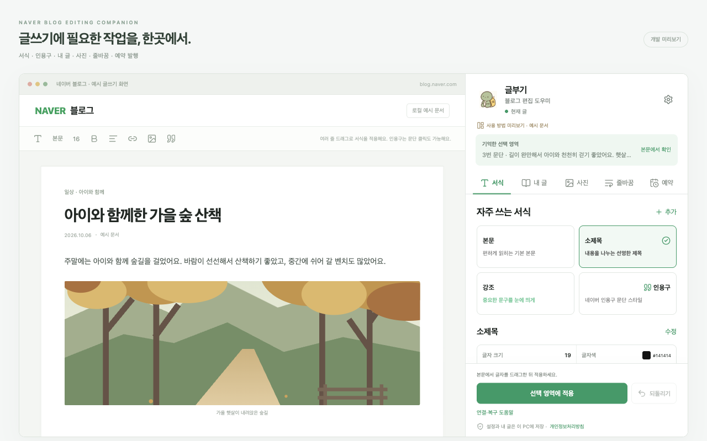
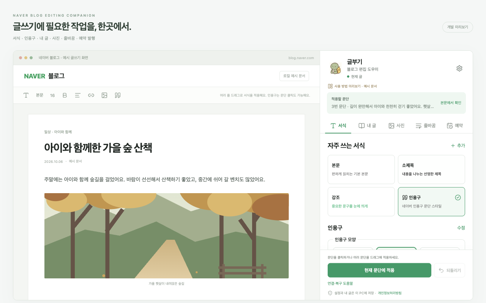
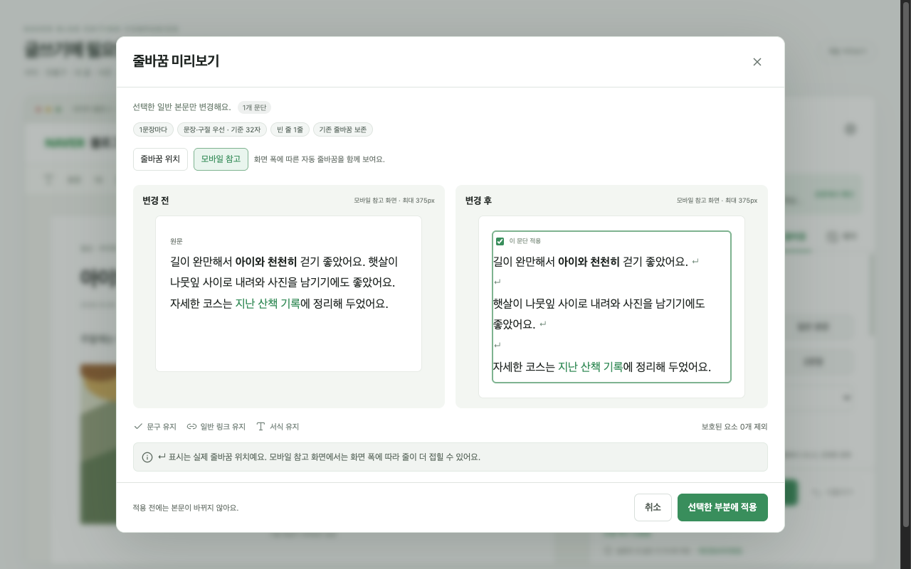
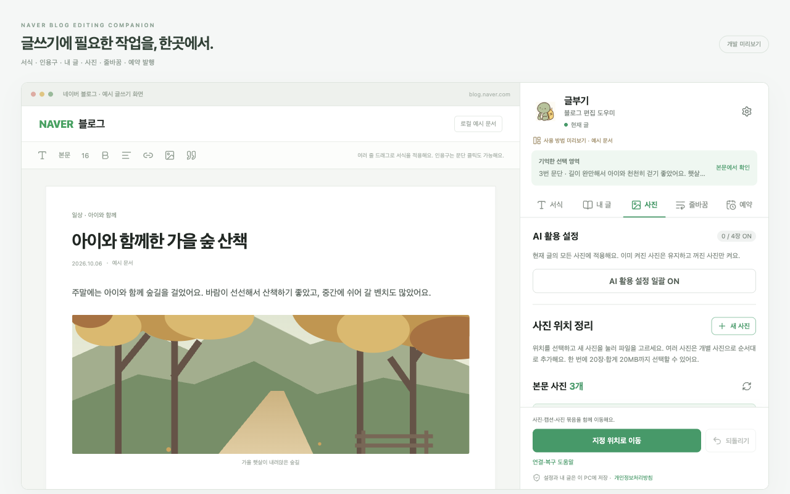
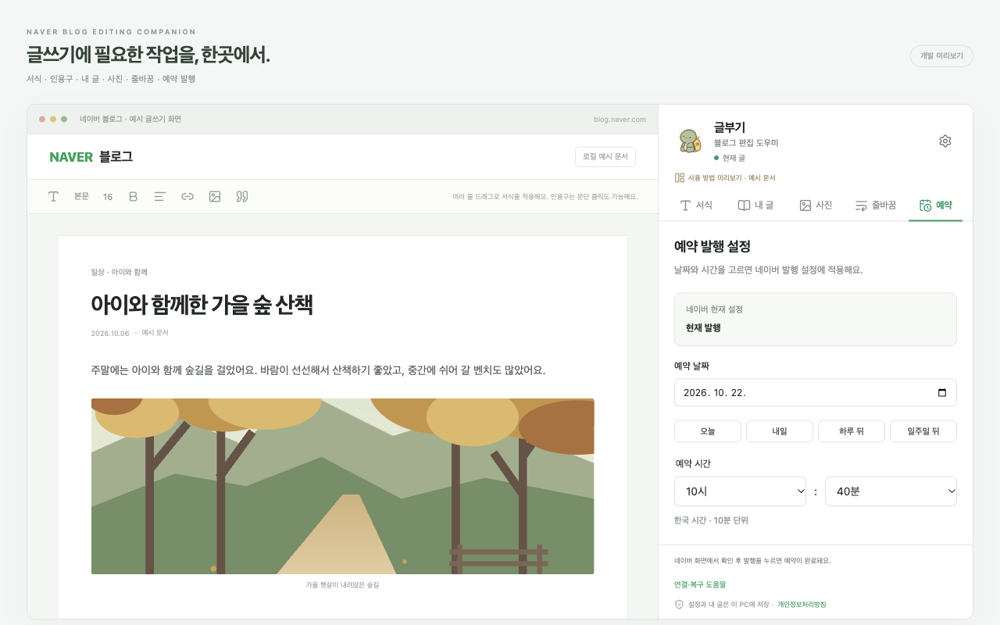

현재 공개 버전은 1.1.2입니다(2026-11-10 사용자 확인). 이 날짜는 자료 정리일이며 실제 출시일을 뜻하지 않습니다. 이번 정리는 로컬 README와 스토어 자료에 반영했으며, 대시보드 저장·패키지 업로드·심사 제출은 수행하지 않았습니다.
스토어 문구의 대시보드 반영은 2026-11-10 사용자 지시에 따라 게시 확인 후 진행합니다. 남은 작업에서 상태를 관리합니다.
1.1.2 서식 적용 후 커서 이동 개선
서식 적용 직후 본문을 클릭해 커서를 옮겼을 때, 적용이 끝났는데도 복구 안내가 표시되던 문제를 수정했습니다. 원래 선택 영역의 서식·원문·사진 보존을 확인한 뒤 새 커서 위치와 직전 작업 되돌리기를 유지합니다. 부분 적용이나 직접 입력은 기존처럼 보호합니다.
내 글 탐색과 단축키
내 글 탭에서 최근 공개 글을 최대 10개 표시합니다. 네이버 블로그 탭이 열려 있으면 실제 카테고리와 하위 분류별 최근 글을 조회할 수 있습니다. 키워드 검색은 전체 카테고리를 최근 작성일순으로 검색하고, '최근 글 보기'로 최근 목록에 복귀합니다. 본문 위치를 다시 선택하지 않고 링크 카드를 연속 삽입할 수 있습니다.
최대 8개 단축키 슬롯에 서식·인용구 프리셋을 연결합니다. 단축키 연결 상태 갱신, 실행 대상 탭 유지, 기능 탭 전환 시 스크롤 상단 복귀와 빠른 입력 중 보조키를 직접 편집으로 오인하던 문제의 수정이 포함되어 있습니다.
편집·미리보기·복구
서식·인용구, 사진 이동·추가·AI 활용 설정, 의미를 살린 줄바꿈 미리보기와 예약 날짜·시간 설정을 제공합니다. 최종 저장·발행은 네이버 화면에서 직접 실행합니다. 결과가 불확실한 작업은 본문 확인 → 네이버 상단 '저장'(임시저장) → 저장 완료 확인 → '저장한 글 새로고침' 순서로 복구합니다.
설치와 제출 자료
Chrome 웹 스토어 · 로컬 설치 ZIP · 스토어 자료 ZIP
기존 1.1.2 로컬 설치 ZIP을 유지했습니다. 스토어에서 내려받은 패키지와 동일하다고 검증한 기록은 아닙니다. 과거 제출·검증 기록은 문서와 submission.json의 submissionHistory에 보존하며 현재 버전의 검증 결과로 재사용하지 않습니다.
스토어 이미지
기존 아이콘·프로모션 타일·스크린샷 5개를 유지했습니다. 화면은 제품의 예시 문서 미리보기이며 개인 원고나 로그인 정보를 포함하지 않습니다. 1.1.2에서 새로 촬영한 이미지나 실제 네이버 연동 검증 화면은 아닙니다.





로컬 설치 ZIP SHA-256
6c54bc6d55cf263ca48210ddf4502866c8997e28033479aa3f73357d2d37949e